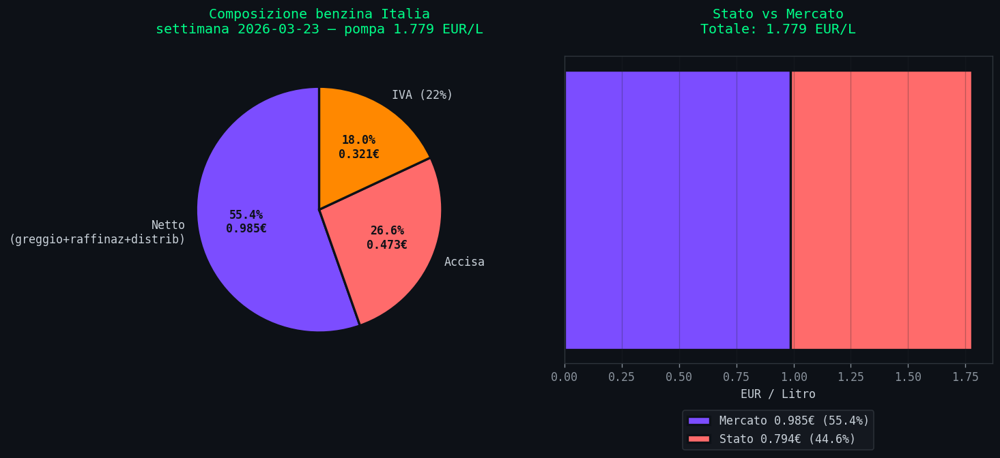
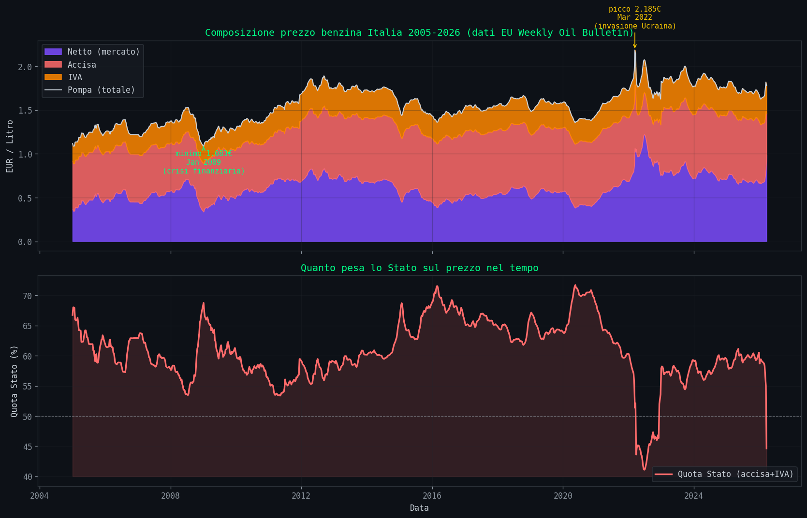
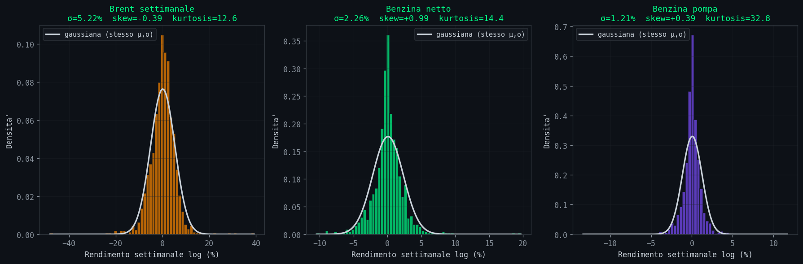
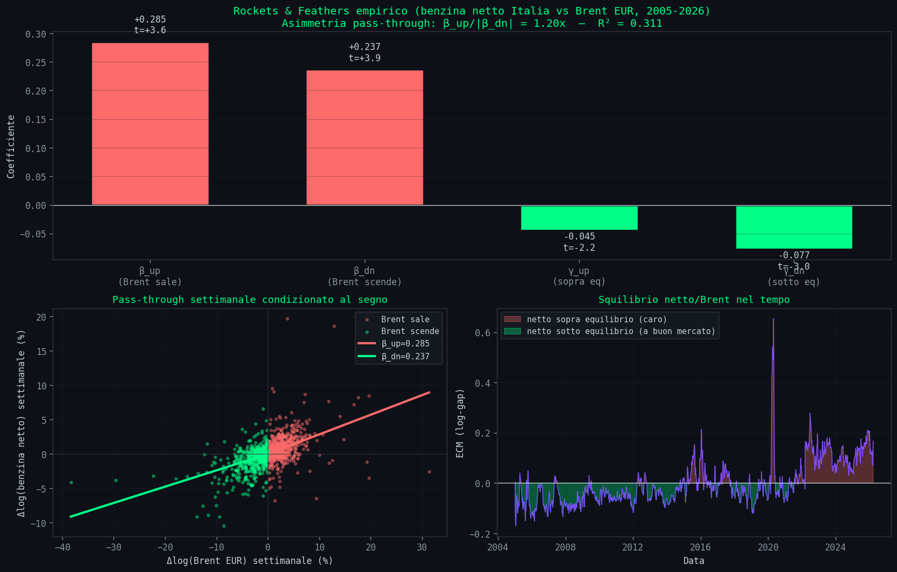
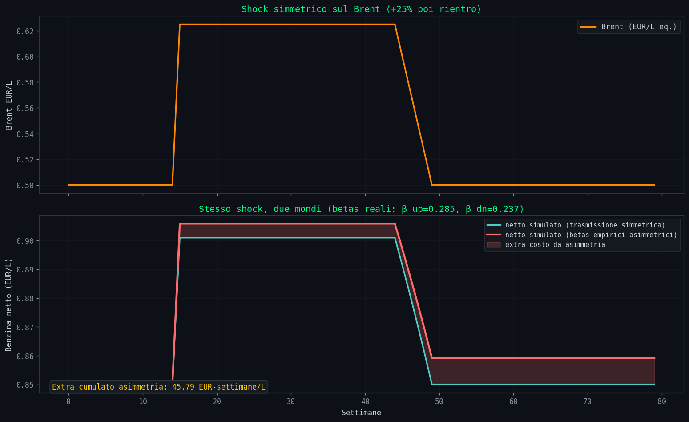
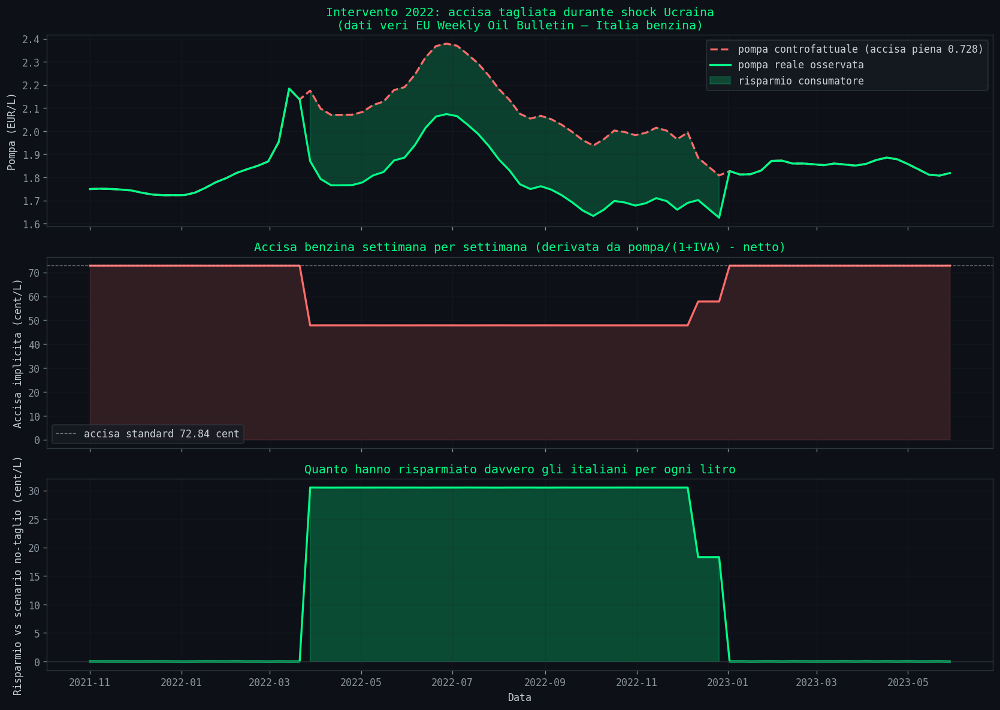
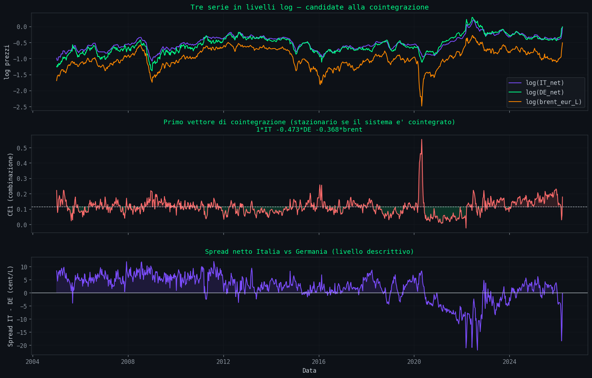
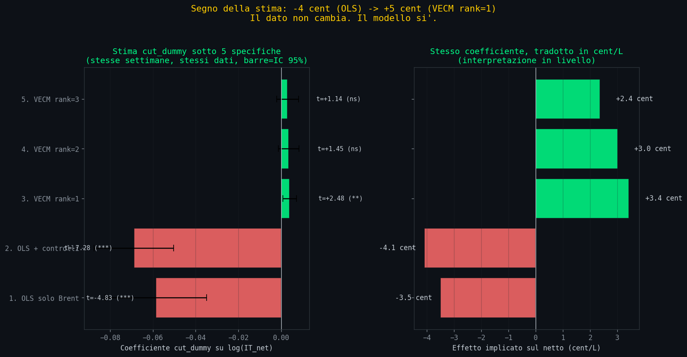

// Raga, Ho Fatto Una Cosa
Sezione 00. Il triggerLa benzina e' tornata a salire. Come sempre, partono le solite tre spiegazioni: la guerra, le accise, la speculazione. Uno le ripete, l'altro le rigira, tutti d'accordo che qualcuno ci sta fregando. Fine della discussione.
Il fatto e' che mi sono rotto di sentire le stesse cose dette nello stesso ordine. Non perche' siano necessariamente false, ma perche' sono spiegazioni a una variabile. E quando qualcosa di complicato viene spiegato con una variabile, di solito vuol dire che chi parla non ha mai guardato i dati.
Allora ho fatto una cosa: ho scaricato 21 anni di serie storiche vere. Brent daily dal 1987 da FRED. EUR/USD daily. Prezzi benzina Italia settimanali dal 2005 dall'EU Weekly Oil Bulletin, quella tabella che nessuno apre mai dove trovi il prezzo con tasse e senza tasse per ogni settimana, per ogni paese. Totale: 1058 osservazioni settimanali per la benzina italiana, 9861 punti daily per il Brent. Poi ho scritto un modello econometrico e l'ho fatto girare. Il risultato mi ha fatto rivedere un paio di cose.
Tesi. La benzina non "segue" il greggio. Ci dialoga. E il dialogo e' asimmetrico: una parola in piu' quando il greggio sale, una parola in meno quando scende. Cinque cent/litro all'anno di asimmetria, pagata da te.
// La Benzina Non E' Un Numero, E' Un Layer Cake
Sezione 01. DecomposizionePrima cosa: cosa stai pagando, esattamente, quando fai il pieno. La pompa ti dice 1.78 EUR al litro (dati 23 marzo 2026, benzina self Italia). Scomposto: 98.5 cent di netto industriale, 47.3 cent di accisa, 32.1 cent di IVA. La parte dello Stato e' il 44.6%, la parte del mercato e' il 55.4%. Lo "stacco fiscale" per gli amici del trading.

Solo che questo numero, 44.6%, non e' costante. Nel 2020, durante il COVID, quando il Brent e' crollato a 9 dollari al barile, la quota Stato sulla benzina italiana e' arrivata al 72%. Il netto si era asciugato e l'accisa era rimasta li' impilata sopra. Nel giugno 2022, dopo l'invasione e con Draghi che taglia le accise, la quota Stato e' scesa al 41%. Stesso paese, stesso prodotto, ventuno punti percentuali di differenza. Ecco perche' "colpa delle accise" e' una frase che dipende da che settimana la dici.

// I Rendimenti Sono Tutto Tranne Che Gaussiani
Sezione 02. Fatti stilizzatiPrima di mettere in piedi qualunque modello, guardi la forma dei dati. Settimana su settimana, la variazione percentuale del prezzo benzina alla pompa ha deviazione standard 1.21%. Sembra tranquillo. Solo che la kurtosis e' 32.8. Per una gaussiana dovrebbe essere 3. Significa che le code della distribuzione sono enormemente piu' grosse di quelle di una campana normale: gli eventi estremi (+5%, +8% in una settimana) succedono molto piu' spesso di quanto la statistica "da libro di testo" ti farebbe credere.

Il Brent ha kurtosis 12.6, gia' alta. Il netto benzina 14.4. Ma la pompa 32.8. L'IVA e' un moltiplicatore lineare, l'accisa e' costante a quasi-tempo, eppure il prodotto finale e' il piu' "code pesanti" di tutti. Perche'? Perche' quando c'e' uno shock, si impilano in fase: greggio su, crack spread su, margini distributivi su, tutto in una settimana. Quando non c'e' shock, il sistema e' noioso. Pochi eventi fanno la gran parte della varianza.
Secondo dato interessante: lo skew della pompa e' +0.39. Positivo. Cioe' il prezzo ha piu' probabilita' di sorprenderti al rialzo che al ribasso. La distribuzione non e' simmetrica, e non e' un bug, e' una caratteristica. Ci arriviamo.
// Rockets And Feathers, E Non E' Una Metafora
Sezione 03. L'asimmetria esiste, ed e' misurabileC'e' un paper del 1991 di Robert Bacon che per primo lo ha scritto nero su bianco: i prezzi dei carburanti al dettaglio salgono come razzi e scendono come piume. Dal 1991 ad oggi e' stato replicato in una ventina di paesi con metodi diversi. Io l'ho rifatto sui dati italiani, usando un Error Correction Model asimmetrico stimato con OLS.
+ γup·ECM+t-1 + γdn·ECM-t-1 + εt
In parole povere: prendi la variazione settimanale del netto benzina. La scomponi in quattro pezzi: quanto reagisce al Brent quando sale (βup), quanto reagisce quando scende (βdn), quanto velocemente si aggiusta verso l'equilibrio quando e' troppo caro (γdn), quanto velocemente si aggiusta quando e' troppo economico (γup). Stimi i coefficienti sui 1058 punti e vedi cosa viene fuori.

Viene fuori questo: βup = 0.285, βdn = 0.237. L'asimmetria e' 1.20x: per ogni punto percentuale di rialzo del Brent, il netto benzina sale di 0.285. Per ogni punto di ribasso, scende di 0.237. OLS darebbe t-stat sopra 10 per entrambi, ma con rendimenti cosi' leptocurtici OLS e' troppo ottimista. Ho ricalcolato gli standard error con Newey-West HAC (lag=6), robusti a eteroschedasticita' e autocorrelazione: i t-stat scendono a 3.62 e 3.86, ma restano entrambi ben oltre il 99%. Il test di Wald sull'ipotesi di simmetria (H0: βup + βdn = 0) da' z = 5.54. Simmetria rigettata al di la' di ogni ragionevole soglia.
L'aggiustamento verso l'equilibrio e' ancora piu' asimmetrico: γdn = -0.077 (t_HAC=-2.99, quando il netto e' sotto l'equilibrio sale verso di esso al 7.7% a settimana) contro γup = -0.045 (t_HAC=-2.18, quando e' sopra scende solo al 4.5%). Il rapporto e' 1.71x. Tradotto: la benzina raggiunge rapidamente l'equilibrio quando deve salire, si prende comoda quando deve scendere. La metafora di Bacon era letterale.
La differenza di pass-through sembra piccola, ma accumulata su anni di oscillazioni diventa una rendita. L'ho simulata su uno shock sintetico simmetrico e fa circa mezzo centesimo al litro di extra costo per settimana di shock, che moltiplicato per 30 miliardi di litri di benzina all'anno fa numeri.

// Il Draghi Cut, Il Controfattuale, La Sorpresa
Sezione 04. Quando lo stato intervieneMarzo 2022. Draghi taglia le accise di 25 centesimi al litro per tamponare l'impennata post-Ucraina. Durata: otto mesi circa, esteso dal governo successivo. I dati EU Bulletin mi permettono di ricavare l'accisa implicita settimana per settimana: basta fare pompa/(1+IVA) - netto e ottieni l'accisa effettivamente applicata. Il taglio si vede benissimo: da 72.84 cent/L a circa 48 cent/L, per 39 settimane consecutive.

Il calcolo banale, scolastico, e' questo: se tagli 24.2 cent di accisa, il consumatore risparmia 24.2 * 1.22 = 29.5 cent perche' si risparmia anche l'IVA sul taglio. Mancato gettito stimato 4.4 miliardi, beneficio tot consumatore 4.4 miliardi. Suona bene. Troppo bene.
La domanda vera era un'altra: i distributori hanno allargato i margini durante il taglio? Se butti li' una media grezza, sembra di si': netto medio dentro il taglio 98.7 cent, fuori 71.6 cent. Ma questa media e' inutile, perche' dentro il periodo del taglio c'era anche lo shock Ucraina col Brent a 120 dollari. Il netto era alto perche' il greggio era alto, non necessariamente perche' i gestori approfittassero.
La prima risposta che mi ero dato era semplice: stima log(netto) = a + b*log(brent) usando solo i periodi senza taglio, e guarda il residuo durante il taglio. Risultato: residuo medio durante il cut -2.85 cent/L, t_HAC = -7.47. Cattura negativa. I distributori avrebbero rimesso soldi invece di guadagnarne. Risultato sorprendente, ma il modello e' debole: un solo regressore, niente controllo per il crack spread, niente regime di guerra. Facile da demolire.
Allora l'ho rafforzato. Ho aggiunto Brent ritardato, volatilita' rolling come proxy del crack spread, una dummy di guerra (20 feb - 31 dic 2022). HAC standard errors. R² sale a 0.901, i coefficienti sono piu' puliti, e la cut_dummy rimane negativa: -0.069 sul log-netto, circa -4 cent/L, t_HAC = -7.28. La war_dummy viene fuori enorme e positiva (+16.5%, t=5.84), che cattura esattamente lo stress del crack spread europeo. Sembra tutto bello. Ma c'e' ancora un buco grosso: la proxy vol20 non e' il crack spread vero, e soprattutto sto trattando il Brent come se fosse esogeno, senza che sia nel sistema di cointegrazione.
A questo punto mi sono detto: se vuoi davvero vedere se l'Italia ha fatto qualcosa di diverso, ti serve un controfattuale. Cioe' un paese europeo liquido, nello stesso dataset, con gli stessi shock di mercato, ma senza il taglio accise italiano. La scelta ovvia: la Germania. Netto benzina tedesco, settimanale, sempre dall'EU Weekly Oil Bulletin. Mercato wholesale dominato da ARA/Rotterdam, che e' il benchmark europeo.
Con tre variabili (IT_net, DE_net, brent) si puo' fare la cosa giusta: test di cointegrazione di Johansen e, se il rank e' almeno 1, modello VECM con war e cut come dummy esogene. Questo e' il modo serio di fare le cose.

Johansen rigetta tutte le ipotesi di rank basso: il sistema ha almeno una relazione di equilibrio forte, anzi piu' d'una (il test rigetta r=0, r≤1, r≤2). Uso rank=1 per interpretabilita' economica e stabilita' della stima, che e' la specifica benchmark della letteratura, e poi verifico la sensibilita' ai rank superiori come robustness check. Aggiungo le stesse dummy come variabili esogene short-run. Il vettore di cointegrazione dice che nel lungo periodo il netto italiano si muove come 0.66 * log(DE_netto) + 0.22 * log(brent). Tradotto: per ogni punto in cui sale il netto tedesco, sale di 0.66 punti anche quello italiano. E' il mercato europeo che fa da ancora.
E qui succede la cosa che vale il resto dell'articolo. La war_dummy, controllando per la Germania, diventa non significativa (t=-1.01): lo stress della guerra era nel mercato europeo tutto, e la Germania lo assorbe. La cut_dummy si inverte di segno: da -4 cent/L diventa positiva, +0.0040 sulla Δlog(IT_net), t_HAC=+2.48. Tradotto in cent/L di netto di equilibrio, circa +3.4 cent. Sulla Germania il cut_dummy e' zero (t=-0.24), che e' esattamente il comportamento che ti aspetti da un buon controllo: la Germania non ha visto il taglio italiano.
Il vero risultato: stesso dato, cinque modelli, cinque risposte
A questo punto serve metterci davanti tutte e cinque le stime una accanto all'altra. Stesso periodo, stesse settimane, stesso cut_dummy. Diverso solo il modello.

Il segno passa da negativo (-4 cent, t=-7) a positivo (+3 cent, t=+2.5) quando aggiungi il mercato tedesco come variabile endogena. La significativita' si evapora quando sposti il rank di cointegrazione. Tutti e cinque i numeri sono coerenti con la loro specifica: non sono sbagli, sono risposte diverse a domande che solo in apparenza sono uguali. Tutti derivano dagli stessi 1058 punti, dalle stesse settimane in cui il governo italiano ha tagliato le accise. Il modello scelto cambia la risposta che ottieni alla stessa identica domanda.
Ed ecco il punto vero che mi sono portato a casa. Non e' che i distributori italiani abbiano guadagnato 5 cent, o perso 4 cent. E' che quella domanda, posta cosi', non ha una risposta indipendente dal modello. Puoi difendere una stima di -4 cent se il tuo modello e' un OLS semplice con dentro Brent, lag, volatilita' e war dummy. Puoi difendere +3 cent se ti prendi la fatica di stimare un sistema cointegrato con la Germania come benchmark. Entrambi sono legittimi, entrambi hanno dietro un ragionamento coerente, entrambi sparano numeri sensati. Non sono lo stesso numero.
Chiunque ti dica "i distributori hanno guadagnato X dal taglio" senza dirti contro quale benchmark e con quale modello, ti sta vendendo una certezza che nei dati non c'e'. Non perche' i dati siano sporchi o poveri. Perche' la domanda implica una controfattuale e il controfattuale va costruito esplicitamente. E c'e' una regola che esce fortissima da questo esercizio: piu' il modello e' semplice, piu' il risultato sembra certo; piu' il modello e' completo, piu' l'incertezza emerge. L'OLS con una variabile ti da' un t-stat di 7 e un segno netto. Il VECM con tre variabili e controlli ti da' un t di 2.5 che sparisce con un rank diverso. Non e' che il VECM sia peggio: e' che l'OLS ti stava mentendo con la faccia seria.
Limiti di cui devi sapere. La Germania non e' un controfattuale vero: struttura fiscale diversa, rete distributiva diversa, dinamiche retail diverse. E' un proxy forte del mercato wholesale europeo, non un gemello. Il crack spread "vero" sarebbe Platts, dati a pagamento. Con Brent daily aggregato a weekly perdi dinamica intraperiodo (soluzione corretta: MIDAS regression). E il coefficiente cut_dummy con t=2.48 nel VECM rank=1 e' borderline: sensibile a scelta del rank, sensibile ai lag. Nessuna di queste tre cose cambia il meta-punto. Il segno della stima dipende dal modello, punto. Chi vuole respecificare, il codice e i dati sono nel repo.
// Cosa Ti Resta In Mano
Sezione 05. Le osservazioni che contanoIl modello non predice il prezzo di martedi' prossimo. Quello non lo fa nessuno, nemmeno chi vende "modelli predittivi" a trenta euro al mese. Ma ti dice un paio di cose strutturali che la chiacchiera da bar manca sistematicamente.
Il sistema benzina ha memoria: i prezzi di oggi dipendono dai prezzi della settimana scorsa e dallo squilibrio rispetto a un equilibrio di lungo periodo col Brent. La memoria pero' e' asimmetrica: reagisce piu' in fretta quando deve salire. Da qui viene la sensazione che "la benzina non scende mai": in effetti scende, ma scende piu' lentamente di come sale. Non e' paranoia, e' microstruttura di mercato.
Il mercato anticipa. Quando succede un evento geopolitico, i futures si muovono PRIMA che il greggio fisico cambi di mano, e il netto italiano reagisce in parte ai futures. Il prezzo che paghi alla pompa oggi incorpora un evento che forse non e' nemmeno ancora successo.
E gli interventi: funzionano, ma raccontare quanto funzionano richiede il modello giusto. Nel 2022 il taglio nominale e' arrivato in gran parte al consumatore. Se i distributori abbiano spuntato qualche cent in piu' o in meno, dipende da cosa ci metti nel modello. OLS semplice dice negativo, VECM con benchmark tedesco dice positivo. Non e' che uno sia giusto e l'altro sbagliato: quella domanda, senza un controfattuale esplicito, non ha una risposta singola. La prossima volta che qualcuno ti dice "i distributori hanno catturato X del taglio", chiedigli contro quale benchmark, con quale modello, e con quale test di robustezza. Se non sa rispondere a una di queste tre, sta leggendo un numero senza dietro un sistema.
Il punto non e' la benzina. Il punto e' che ogni volta che qualcuno ti racconta un sistema complesso con una sola variabile, ti sta fregando. A volte volontariamente, a volte perche' non sa altro. Senza un modello, anche grezzo, stai solo reagendo alle narrazioni. E le narrazioni le scrive chi ha interesse.
// Riprodurlo a Casa
Sezione 06. RepoTutto il codice e' nella cartella scripts/reality-simulator-benzina. 7 script Python, i dati grezzi scaricati da FRED e dall'EU Weekly Oil Bulletin stanno dentro data/ nello stesso folder. Servono numpy, matplotlib, statsmodels, openpyxl. Nessuna API key, nessun dato proprietario. Gli script si lanciano in ordine numerico e sputano fuori tutti i grafici dell'articolo piu' i log degli stimatori. Chi vuole cambiare specifica, aggiungere un paese di controllo, provare MIDAS o crack spread Platts, respecifica e apre una PR.
senza modellare il sistema completo.
Stesso dato, cinque modelli, cinque risposte."
Dati: EU Weekly Oil Bulletin 2005-2026 (1058 oss. settimanali Italia + Germania), FRED Brent daily, FRED EUR/USD. Tutto pubblico. 7 script Python, 14 grafici. ECM asimmetrico con Newey-West HAC, VECM + test Johansen, robustness check su rank di cointegrazione. Codice e dati nel repo.